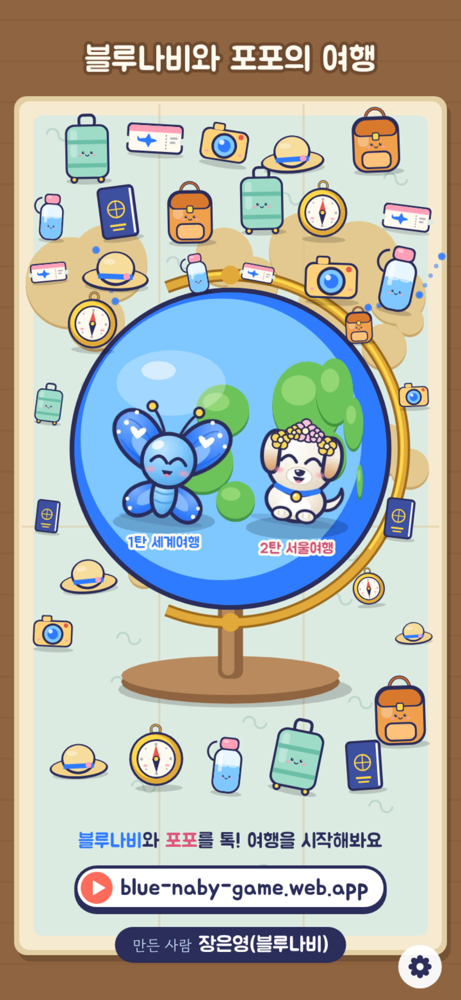
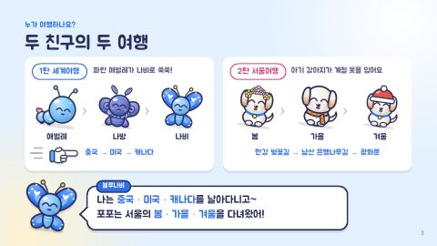
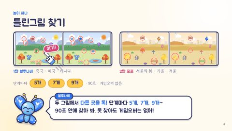
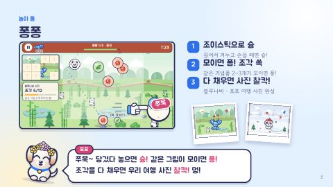

안녕하세요, 블루나비 장은영입니다. 오늘은 제가 약 3주 동안 만든 게임 「블루나비와 포포의 여행」을 소개해 드릴게요. 화면 속 이 두 친구가 바로 주인공, 블루나비와 포포예요.
이 게임은 한마디로, 설치 없이 링크 하나로 폰에서 바로 하는 귀여운 여행 퍼즐 게임이에요. 앱을 깔거나 회원가입을 할 필요가 없어요. 받은 링크를 톡 누르면 지구본이 나오고, 가운데 있는 블루나비나 포포를 톡 하면 여행이 시작돼요.

여행은 두 편이에요. 1탄 「세계여행」에서는 파란 애벌레 블루나비가 중국, 미국, 캐나다를 여행하며 나방을 거쳐 나비로 자라요. 2탄 「서울여행」에서는 블루나비의 친구, 아기 강아지 포포가 한강 벚꽃길, 남산 은행나무길, 광화문을 지나며 봄, 가을, 겨울 옷을 갈아입어요. 놀이 방법은 같고, 그림과 음악이 달라요.

첫 번째 놀이는 틀린그림 찾기예요. 나라와 계절마다 그림이 두 장 나오고, 다른 곳을 톡 누르면 빨간 동그라미가 그려져요. 1단계는 다섯 개, 2단계는 일곱 개, 3단계는 아홉 개를 90초 안에 찾아요. 아무 데나 막 누르면 1초 동안 누를 수 없으니까 잘 보고 눌러야 해요. 시간이 끝나도 게임오버는 없어요. "아깝다! 다시 도전?" 하고 바로 다시 할 수 있어요.

두 번째 놀이는 퐁퐁이에요. 화면 아래 조이스틱을 쭉 끌어 겨누고 손을 떼면 기념품 공이 슝 날아가요. 위에서 내려오는 같은 기념품에 맞히면 붙고, 두세 개가 모이면 퐁! 터지면서 그림 조각이 한 칸씩 채워져요. 다른 기념품을 맞히면 3초가 줄어드니까, 원하는 공이 아니면 톡 눌러서 바꿔 쏘면 돼요. 조각을 다 채우면 블루나비와 포포의 여행 사진이 찰칵! 완성돼요. 나라와 계절마다 배경음악도 달라요.
「같이 하기」에서는 친구와 함께 할 수 있어요. 한 폰으로 번갈아 하고 더 빨리 끝낸 사람이 이기거나, 대결장 링크를 카카오톡으로 보내서 각자 폰으로 같은 판을 겨룰 수도 있어요. 서버 없이 링크만으로 겨루기 때문에 개인정보도 모으지 않아요.
이 게임은 10월 30일에 시작해서 약 3주 동안 만들었어요. 기획과 결정은 제가 하고, 코드와 그림은 AI인 Claude와 함께 만들었어요. 가장 큰 고비는 태블릿에서 Firebase 열쇠가 복사되지 않아 공개가 막혔던 일인데, 복사 버튼을 따로 만들어서 해결했어요. 친구들이 "미로가 어려워" 하면 쉽게 고치고, 더 짧게 즐기도록 틀린그림 찾기와 새 퐁퐁으로 바꾸면서, 정식 주소에 스무 번 넘게 다시 올렸어요.
작은 애벌레가 나비가 되듯, 이 게임도 친구들의 의견을 들으며 조금씩 자랐어요. 지금 화면의 QR을 찍으면 바로 해 볼 수 있어요. 블루나비, 포포와 함께 여행을 떠나 보세요. 감사합니다!